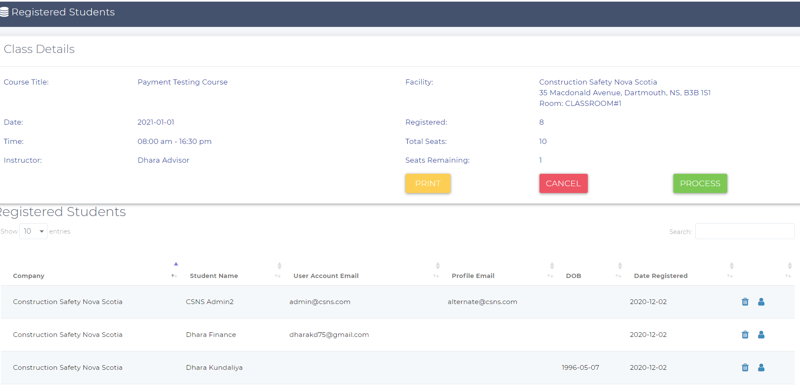

How to create a class?
You can create a class from the create classes page
- Select a Course It is a dropdown with all the active courses. Select the course you want to schedule a class for.
- Delivery Method:Select the delivery method for the class from this dropdown. There are four types of delivery methods.
- Regular: Training scheduled at association's facility
- Virtual: Scheduled online course with live instructor and interactions
- Virtual: Scheduled online course with live instructor and interactions
- On-demand: Both can be done either at the client's office or association's facility. The on-demand classes are private classes.
- In-house: CSNS certified trainer provides association's training at external locations. In-house classes are also private classes.
Private classes are not visible to end-users. They can not register themselves for private classes.
- Public/Private: Public classes are visible to end-users and they can register for public classes. classes with the delivery method regular can be both public and private.
- Start Date:It is the date of the scheduled class.
- Start/End Time: You can specify the timing of the class. The end time must be greate than the start time or else the system give an error.
- Facility: Select the facility where the class is going to be. You can add/delete/edit facility details from the other page. Click Facility to get more information.
- Total Seats: This defines the total number of students this class allows. The facility seats and the class seats are different thing. A facility seats are the number of students that room can hold. Class seats must be less than or equals to the facility seats.
- Instructor: Select the instructor who is going to teach the class. The dropdown only displays the list of instructors with an active online account.
If you don't see any instructor's name, check if they have an online account or not.
- Quiz?? If the switch is on that means the class offers a quiz and if it is off means it doesn't. By default, the switch is turned on to minimize clicks by admin.
- Supress Email Notifications: When the class is created, the system sends an email to the selected instructor with the class details. When you update the class details and the students are registered for the class then the system will send an email notification to students and the instructor notifying them about class changes. If you don't wish to send an email notification then turn this switch on. When it is on, the system won't send an email to students and the instructor.
When you click on the create/edit button, the system will validate if the facility and the instructor is available or not. If the facility is assigned to another class for the given date and time OR the instructor is already assigned to another class for the same date/time, The system will throw an error and will not create a class. Refer the below picture.
How to edit the class??
To edit the class, go to the edit page of the class you wish to edit details for. When you edit the class, the system will send an email notification to the registered students and the instructor.
How to cancel a class??
If the course is unpublished, you won't be able to cancel the class. If the course and class both are published then only you will see a link under the actions column to cancel the class. Click on that link and it will prompt you to add an optional message. If you wants to explain to the students and the instructor about why you are cancelling the class, add that message in the optional message box. When you cancel a class, registered students and the instructor will get an email with the optional message.
How to view the list of registered students for the class??
You can see the list of registered students page two ways:
- From the Classes page Click on the view registration link from the list of classes page as shown in the below picture.
- From the Calendar: There is a calendar present on the admin dashboard, find the class and click on the class to view the list of registered students page.
The view registration page looks like the below picture. You can print the page, cancel the class, unregister students or edit their profiles.
- To print the class details with the list of registered students, click on the print button.
- To cancel the class, click on the cancel button. This action will cancel the class and refund the money.
- Click on the edit profile icon present next to each profile to edit user's profile details. This will open up the new window, after updating the profile, come back to the view registration page and refresh the page to see the updated details of the user.

How to unregister students?? What happens when I unregister them??
On the view registration page, find the student you wish to unregister and click on the delete button. This action will unregister the student and refund the money. IF they have paid for the class using credit card then the system will unregister and refund the money back to their credit card account. For the invoice, the system will update the invoice and remove the student field from the invoice.
How to process the class??
As an Advisor:
From the admin dashboard, click on the class you wish to process. this will open the process completed classes page.
As an LMS admin:
From the view registered students page, click on the process button OR from the admin dashboard, click on the class you wish to process. this will open the process completed classes page.
The attended dropdown has three values:
- Attended: Select this value, if the student has attended the class.
- No Show:Select this if the student was absent.
- Missing required materials:Select this if the student was present but was missing the required materials and as a result wouldn't able to attend the class.
There is also a Valid ID field. If the student had shown the valid govenrment ID then check this box.
Classes with the Quiz:
This page will display a score field if you have turned the switch on while creating a class.
Classes without the Quiz:
This page will not display a score field if you have turned the switch off while creating a class.
- The minimum passing marks is 80%. The system will automatically decide if the student has passed the class or not based on the score you enter in the score field.
- If you put less than 80%, the system will consider it as failed and move the student to the processed-incomplete tab.
- If the score is greater than or equals to 80% then the system will move the student to processed-complete tab.
- Processed-incomplete: This will have a list of students who failed the class, or didn't show up, or forgot to bring the required materials. Please refer to the below image.
- Processed-complete: This will have a list of students who successfully complete the class that includes more than 80% marks and if the class doesn't offer a quiz then the system will display all the students who attended the class in this tab. If the course is offering a certificate then the system will display a certificate print/create link as well.
What happens after complete processing the completed class??
After you hit the update button, The system will send the certificate to students, if their primary and/or alternate email addresses are found. IF the system couldn't find the email id to send the certificates to then it will send all the certificates to the admin, letting the admin know that these are the students with no email address.
Once the class is processed, all students with an online account can access the certificates from their account.